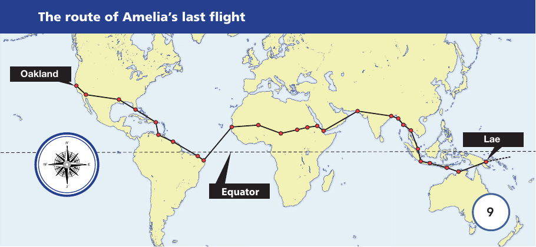

Original reading booklet page 8
Amelia Earhart
A 1930s aeroplane
Early air travel
Before the aeroplane was invented, travelling over long distances was very difficult and took much longer than it does today. It wasn’t until 1903 that the first successful plane was invented. Later, the period between 1918 and 1939 was considered a golden age of flying. This was because of the achievements of brave, pioneering pilots who flew in some of the first powered planes.
In those days, travelling by plane wasn’t comfortable or easy. As flying became popular as a form of travel, there were lots of improvements to the way in which planes were built. There were also many opportunities for pilots to take part in extraordinary displays of their flying skills to capture the public’s imagination. As well as performing at popular air shows, aviators began planning longer and longer flights, trying to fly to different continents, which previously could only be reached by long sea voyages. Flying had opened up a new era of adventure and exploration.
Amelia’s first flights
Pushing the limits of aircraft and setting aviation records became the goal of a select few, among them a young American woman called Amelia Earhart. Amelia had her first flight in 1920 when she was 23. By the time the plane was a few hundred feet off the ground, she was determined to learn to fly by herself. She was a strong-willed and unconventional young woman and, even though most pilots were men at that time, she did not change her mind. When she earned her pilot’s licence in 1923, she was only the sixteenth woman in the world to do so.
In June 1928, only one year after Charles Lindbergh completed the first solo flight across the Atlantic, Amelia was invited to accompany pilots Wilmer Stultz and Louis Gordon on a flight in their plane called ‘Friendship’. They flew from Newfoundland in Canada to Wales, and so she became the first woman to travel across the Atlantic in a plane. The three became instant celebrities and, although Amelia had played no part in flying the plane, her book about the flight became a bestseller.
Amelia Earhart in front of the ‘Friendship’ in 1928
Original reading booklet page 9
Amelia’s fame
As she became well known as a successful modern woman, companies paid Amelia to promote and advertise their products. This meant that she was able to earn enough money to fund her flying career. She gained a reputation for her own flying skill and set a number of records, completing flights by herself. She made the first solo flight by a woman across the American continent and back. Amelia competed in women’s air races and established a world altitude record by taking a plane up to 5,613 metres. In 1932, she flew solo across the Atlantic, the first woman to do so, and was showered with honours. Amelia Earhart was a household name: an outspoken supporter of women’s rights and a successful aviator.
Amelia’s next record attempt
Amelia had a strong desire for yet another extraordinary flying achievement: to fly around the globe at its widest point, the equator. She had a plane built specifically for the attempt, with a greatly increased fuel capacity, which meant she could fly further without stopping to refuel. In 1937, Amelia set out from Oakland, California, intending to fly from east to west around the equator. An accident in Hawaii, however, resulted in major repairs being needed to the plane.
Amelia’s last flight
It wasn’t until three months later in June that she began her attempt again from Oakland, this time travelling from west to east. She reached New Guinea, north of Australia, 28 days later, having covered about 35,000 kilometres or two-thirds of the distance. The next leg of the journey was going to be a very difficult and dangerous one. She was planning to land on Howland Island, a remote island in the Pacific Ocean with only four miles of coastline. On the island, she would take on fuel from a US coastguard ship waiting to assist her with this risky part of her journey.
On 2nd July 1937, Amelia and her navigator left Lae in New Guinea to fly the 4,000 kilometres to Howland Island but were never seen again. What happened to Amelia Earhart is one of the most enduring mysteries of aviation. A massive and expensive search was carried out at the time, and no trace of her plane was found. There have been numerous investigations and rumours about her disappearance over the years. However, the mark she left on the world of aviation was, and still is, incredible.
